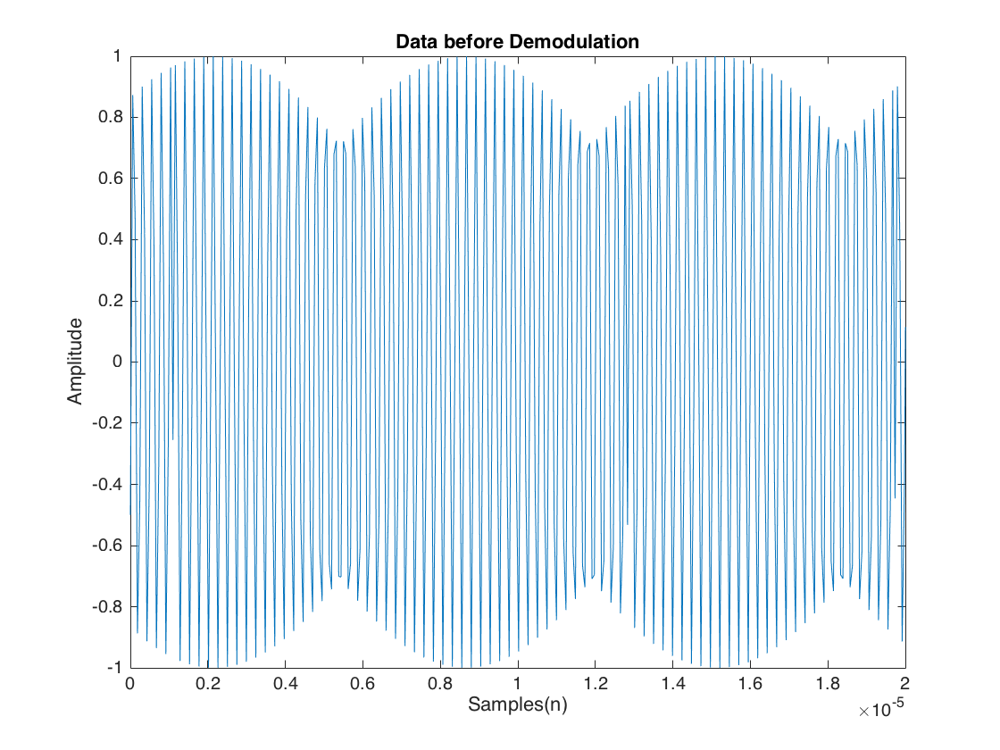
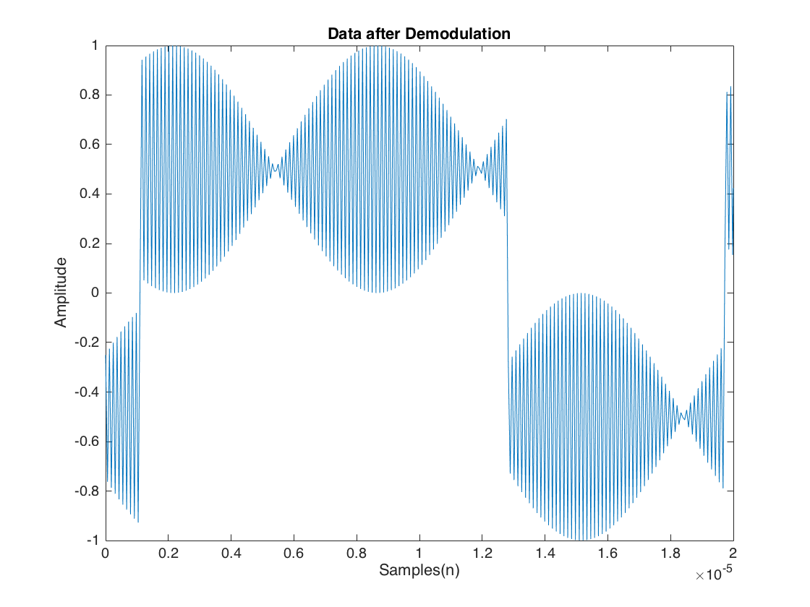

Contents
Lab 1
Collaborators: Jerry H. and Paul J.
clear
close all
clc
Part 1: PRN code offset
load('data1.mat'); % Definitions and constants chipRate = 1023/1e-3; fs = 16.3676e6; % sampling rate of PRN code chipSamp = fs/chipRate; % samples per chip gold_codes = make_goldcodes; % array of gold codes for 37 satellites % Extracting gold codes for SV1, SV2, and SV3 sv1Code = gold_codes(1,:); sv2Code = gold_codes(2,:); sv3Code = gold_codes(3,:); % Extending gold codes to match samples per chip % (Repeating each chip n times) t = ceil(chipSamp); % Samples per chip sv1CodeSamp = repelem(sv1Code,t); sv2CodeSamp = repelem(sv2Code,t); sv3CodeSamp = repelem(sv3Code,t); % Correlating data1 with each satellite code [r1,lags1] = xcorr(data1,sv1CodeSamp); [r2,lags2] = xcorr(data1,sv2CodeSamp); [r3,lags3] = xcorr(data1,sv3CodeSamp); % Choosing correct satellite if (max(r3)>max(r2)) if (max(r3)>max(r1)) r = r3; lags = lags3; sv = 3; else r = r1; lags = lags1; sv = 1; end elseif (max(r2)>max(r1)) r = r2; lags = lags2; sv = 2; else r = r1; lags = lags1; sv = 1; end % Finding offset [~,sampleOffset] = max(r); lagdiff = lags(sampleOffset); chipDelay = lagdiff/chipSamp; % Convert to chip if chipDelay < 1023 % Choose correct delay phaseOffset = 1023 - abs(chipDelay); else phaseOffset = chipDelay; end % Display answers display('Part 1: PRN code offset') display('1) chip rate = 1.023 MHz'); display('2) number of samples/chip = 15.996'); fprintf('3) The matching satellite is SV%d\n',sv); fprintf('4) phase offset = %d\n',round(phaseOffset)); display('****************************************************************');
Part 1: PRN code offset 1) chip rate = 1.023 MHz 2) number of samples/chip = 15.996 3) The matching satellite is SV3 4) phase offset = 838 ****************************************************************
Part 2: Carrier Frequency Modulation
load('data2.mat'); % Definitions and constants fif = 4.1304e6; L = length(data2); f = fs*(0:(L/2))/L; % Demodulate signal t = (0:length(data2)-1)/fs; xif = cos(2*pi*fif*t+pi/3); x_bb = data2.*xif; % Plots limited to .02 ms figure plot(t,data2) title('Data before Demodulation') xlabel('Samples(n)') ylabel('Amplitude') xlim([0,2e-5]) figure plot(t,x_bb) title('Data after Demodulation') xlabel('Samples(n)') ylabel('Amplitude') xlim([0,2e-5]) % Extracting gold codes for SV7, SV8, and SV9 sv7Code = gold_codes(7,:); sv8Code = gold_codes(8,:); sv9Code = gold_codes(9,:); % Extending gold codes to match samples per chip % (Repeating each chip n times) t = ceil(chipSamp); % Samples per chip sv7CodeSamp = repelem(sv7Code,t); sv7CodeSamp = 2*sv7CodeSamp-1; sv8CodeSamp = repelem(sv8Code,t); sv8CodeSamp = 2*sv8CodeSamp-1; sv9CodeSamp = repelem(sv9Code,t); sv9CodeSamp = 2*sv9CodeSamp-1; % Correlating data2 with each satellite code [r7,lags7] = xcorr(x_bb,sv7CodeSamp); [r8,lags8] = xcorr(x_bb,sv8CodeSamp); [r9,lags9] = xcorr(x_bb,sv9CodeSamp); % Choosing correct satellite if (max(r9)>max(r8)) if (max(r9)>max(r7)) r = r9; lags = lags9; sv = 9; else r = r7; lags = lags7; sv = 7; end elseif (max(r8)>max(r7)) r = r8; lags = lags8; sv = 8; else r = r7; lags = lags7; sv = 7; end % Finding offset [~,sampleOffset] = max(r); lagdiff = lags(sampleOffset); chipDelay = lagdiff/chipSamp; % Convert to chip if chipDelay < 1023 % Choose correct delay phaseOffset = 1023 - abs(chipDelay); else phaseOffset = chipDelay; end % Display answers display('Part 2: Carrier Frequency Modulation') display('5) In the data before demodulation, we can see that there is a lot of'); display('high frequency parts where the data is not discernable. You can see'); display('aspects that look like phase shifts at different points.'); display('In the data after demodulation, you can see the highs and lows much'); display('more signficantly, but you can still see some high frequency spots'); display('as the signal still has not been sent through an LPF.'); display('The first 4 chips of the signal are 0111'); fprintf('6) The matching satellite is SV%d\n',sv); display('7) phase offset = 807.5'); display('****************************************************************');
Part 2: Carrier Frequency Modulation 5) In the data before demodulation, we can see that there is a lot of high frequency parts where the data is not discernable. You can see aspects that look like phase shifts at different points. In the data after demodulation, you can see the highs and lows much more signficantly, but you can still see some high frequency spots as the signal still has not been sent through an LPF. The first 4 chips of the signal are 0111 6) The matching satellite is SV7 7) phase offset = 807.5 **************************************************************** 
Part 3: GPS satellite acquisition with known carrier frequency and phase
load('TrimbleDataSet.mat') % Definitions and constants fif = 4.12891e6; % Plotting incoming data for inspection % figure % plot(samples) % Extracting gold codes for SV4 and SV5 sv4Code = gold_codes(4,:); sv5Code = gold_codes(5,:); % Extending gold codes to match samples per chip % (Repeating each chip n times) t = ceil(chipSamp); % Samples per chip sv4CodeSamp = repelem(sv4Code,t); sv4CodeSamp = repmat(sv4CodeSamp,1,5); sv4CodeSamp = 2*sv4CodeSamp-1; sv5CodeSamp = repelem(sv5Code,t); sv5CodeSamp = repmat(sv5CodeSamp,1,5); sv5CodeSamp = 2*sv5CodeSamp-1; % Demodulate signal t = (0:length(samples)-1)/fs; xif = (cos(2*pi*fif*t+5*pi/4))'; x_bb = samples.*xif; % Correlating baseband trimble data with each satellite code [r4,lags4] = xcorr(x_bb,sv4CodeSamp); [r5,lags5] = xcorr(x_bb,sv5CodeSamp); % Choosing correct satellite if (max(abs(r4))>max(abs(r5))) r = r4; lags = lags4; sv = 4; else r = r5; lags = lags5; sv = 5; end % Finding offset [~,sampleOffset] = max(abs(r)); lagdiff = lags(sampleOffset); chipDelay = lagdiff/chipSamp; % Convert to chip if chipDelay < 1023 % Choose correct delay phaseOffset = 5*1023 - abs(chipDelay); else phaseOffset = chipDelay; end % Display answers display('Part 3: GPS satellite acquisition with known carrier freq and phase') display('8) No, we cannot identify first 4 chips by inspection because of noise'); display('9) We have to extend the reference gold codes in order to perform'); display('a long enough correlation. This allows us to identify the signal,'); display('and find the correct phase offset in the noise.'); fprintf('10) The matching satellite is SV%d\n',sv); display('11) phase offset = 2327.5'); display('****************************************************************');
Part 3: GPS satellite acquisition with known carrier freq and phase 8) No, we cannot identify first 4 chips by inspection because of noise 9) We have to extend the reference gold codes in order to perform a long enough correlation. This allows us to identify the signal, and find the correct phase offset in the noise. 10) The matching satellite is SV5 11) phase offset = 2327.5 ****************************************************************
Part 4: GPS satellite acquisition with known carrier frequency
Definitions and constants
fif = 4.131899e6; % Extracting gold codes for SV4 and SV5 sv10Code = gold_codes(10,:); sv11Code = gold_codes(11,:); % Extending gold codes to match samples per chip % (Repeating each chip n times) t = ceil(chipSamp); % Samples per chip sv10CodeSamp = repelem(sv10Code,t); sv10CodeSamp = repmat(sv10CodeSamp,1,5); sv10CodeSamp = 2*sv10CodeSamp-1; sv11CodeSamp = repelem(sv11Code,t); sv11CodeSamp = repmat(sv11CodeSamp,1,5); sv11CodeSamp = 2*sv11CodeSamp-1; close all % Quadrature demodulation of signal t = (0:length(samples)-1)/fs; xif_i = (cos(2*pi*fif*t))'; xif_q = (sin(2*pi*fif*t))'; x_bbi = samples.*xif_i; x_bbq = samples.*xif_q; % Find I, Q parts [r10i,lags10i] = xcorr(x_bbi,sv10CodeSamp); [r10q,~] = xcorr(x_bbq,sv10CodeSamp); [r11i,lags11i] = xcorr(x_bbi,sv11CodeSamp); [r11q,~] = xcorr(x_bbq,sv11CodeSamp); r10_iq = sqrt(r10i.^2 + r10q.^2); r11_iq = sqrt(r11i.^2 + r11q.^2); % Choosing correct satellite if (max(abs(r10_iq))>max(abs(r11_iq))) r = r10_iq; lags = lags10i; sv = 10; else r = r11_iq; lags = lags11i; sv = 11; end % Finding offset [~,sampleOffset] = max(r); lagdiff = lags(sampleOffset); chipDelay = lagdiff/chipSamp; % Convert to chip if chipDelay < 1023 % Choose correct delay phaseOffset = 5*1023 - abs(chipDelay); else phaseOffset = chipDelay; end % Display answers display('Part 4: GPS satellite acquisition with known carrier frequency') fprintf('12) The matching satellite is SV%d\n',sv); display('13) phase offset = 1049'); display('14) When run the code from Part 3, we can still identify the satellite.'); display('However, the calculated phase offset is incorrect. By doing'); display('quadrature demodulation, we can calculate the correct phase offset'); display('regardless of the actual incoming phase offset.'); display('****************************************************************');
Part 4: GPS satellite acquisition with known carrier frequency 12) The matching satellite is SV10 13) phase offset = 1049 14) When run the code from Part 3, we can still identify the satellite. However, the calculated phase offset is incorrect. By doing quadrature demodulation, we can calculate the correct phase offset regardless of the actual incoming phase offset. ****************************************************************
Part 5: Realistic GPS satellite acquisition
Definitions and constants
fif = 4.1304e6; % Nominal fif % Extracting gold codes for SV4 and SV5 sv12Code = gold_codes(12,:); sv13Code = gold_codes(13,:); % Extending gold codes to match samples per chip % (Repeating each chip n times) t = ceil(chipSamp); % Samples per chip sv12CodeSamp = repelem(sv12Code,t); sv12CodeSamp = repmat(sv12CodeSamp,1,5); sv12CodeSamp = 2*sv12CodeSamp-1; sv13CodeSamp = repelem(sv13Code,t); sv13CodeSamp = repmat(sv13CodeSamp,1,5); sv13CodeSamp = 2*sv13CodeSamp-1; %Search all Doppler bins doppler_bin = 500; maxVal = -inf; for i = -4:4 % Demodulate signal using bin i t = (0:length(samples)-1)/fs; xif_i = (cos(2*pi*(fif+i*doppler_bin)*t))'; xif_q = (sin(2*pi*(fif+i*doppler_bin)*t))'; x_bbi = samples.*xif_i; x_bbq = samples.*xif_q; % Find I, Q parts [r12i,lags12i] = xcorr(x_bbi,sv12CodeSamp); [r12q,lags12q] = xcorr(x_bbq,sv12CodeSamp); [r13i,lags13i] = xcorr(x_bbi,sv13CodeSamp); [r13q,lags13q] = xcorr(x_bbq,sv13CodeSamp); r12_iq = sqrt(r12i.^2 + r12q.^2); r13_iq = sqrt(r13i.^2 + r13q.^2); % Keep track of max index currMax12 = max(r12_iq); currMax13 = max(r13_iq); if currMax12 > currMax13 currMax = currMax12; svtmp = 12; rtmp = r12_iq; lagtmp = lags12i; else currMax = currMax13; svtmp = 13; rtmp = r13_iq; lagtmp = lags13i; end if currMax > maxVal maxVal = currMax; maxInd = i; sv = svtmp; r = rtmp; lags = lagtmp; end end % Finding offset [~,sampleOffset] = max(r); lagdiff = lags(sampleOffset); chipDelay = lagdiff/chipSamp; % Convert to chip if chipDelay < 1023 % Choose correct delay phaseOffset = 5*1023 - abs(chipDelay); else phaseOffset = chipDelay; end % Calculate actual IF actualIF = fif+maxInd*doppler_bin; % Calculate program run time for 32 satellites and +/- 5KHz doppler shift % (given run time of this program is about 0.89 seconds) runTime32 = 0.89*12/9; % Accounting for increase search range (+/-5KHz) runTime32 = 16*runTime32; % Accounting for increased satelltes (32) % Display answers display('Part 5: Realistic GPS satellite acquisition') fprintf('15) The matching satellite is SV%d\n',sv); display('16) phase offset = 3540.5 chips'); display('17) The actual IF carrer is 4.1295 MHz (nearest 500 Hz)'); display('18) This program takes about 0.89s to identify correct satellite'); display('19) For 32 satellites and +/-5KHz, total run time is about 19 seconds.'); display('****************************************************************');
Part 5: Realistic GPS satellite acquisition 15) The matching satellite is SV12 16) phase offset = 3540.5 chips 17) The actual IF carrer is 4.1295 MHz (nearest 500 Hz) 18) This program takes about 0.89s to identify correct satellite 19) For 32 satellites and +/-5KHz, total run time is about 19 seconds. ****************************************************************